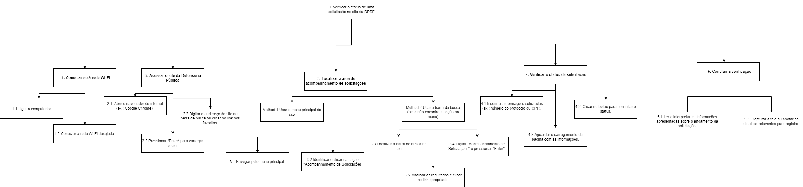
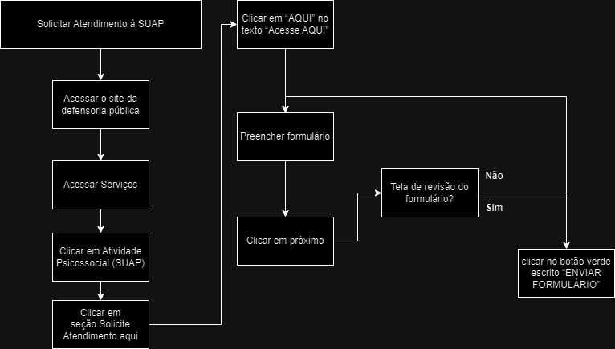

Análise de Tarefas para o Site da Defensoria Pública do Distrito Federal (DPDF)
| Data | Data Prevista de Revisão | Versão | Descrição | Autor | Revisor |
|---|---|---|---|---|---|
| 01/12/2024 | 02/12/2024 | 1.0 | Criação do Documento | João Victor C. Nobre Karolina VieiraPaola Nascimento | Lucas Sales |
| 02/12/2024 | 02/12/2024 | 1.1 | Adição do histórico de versões | Lucas Sales | João Victor C. Nobre |
| 02/12/2024 | 02/12/2024 | 1.2 | Adição da tarefa 04 | Lucas Sales | João Victor C. Nobre |
Objetivos, Operadores, Métodos e Regras de Seleção (GOMS)
A metodologia GOMS (Goals, Operators, Methods, and Selection Rules) é usada para detalhar as ações necessárias para concluir tarefas no site da DPDF. Abaixo, apresentamos a análise de tarefas realizadas no site:
Tarefa 1: Acompanhar a Resposta de uma Solicitação
Goal 0: Verificar o status de uma solicitação no site da Defensoria Pública
Method 1: Passos para acessar e consultar o status da solicitação
Goal 1: Conectar-se à rede Wi-Fi - OP 1.1: Ligar o computador. - OP 1.2: Conectar à rede Wi-Fi desejada.
Goal 2: Acessar o site da Defensoria Pública - OP 2.1: Abrir o navegador de internet (ex.: Google Chrome). - OP 2.2: Digitar o endereço do site. - OP 2.3: Pressionar Enter para carregar o site.
Goal 3: Localizar a área de acompanhamento de solicitações Method 1: Usar o menu principal do site - OP 3.1: Navegar pelo menu principal. - OP 3.2: Identificar e clicar na seção "Acompanhamento de Solicitações".
Method 2: Usar a barra de busca - OP 3.3: Localizar a barra de busca no site. - OP 3.4: Digitar "Acompanhamento de Solicitações" e pressionar Enter. - OP 3.5: Analisar os resultados e clicar no link apropriado.
Goal 4: Verificar o status da solicitação - OP 4.1: Inserir as informações solicitadas (ex.: número do protocolo ou CPF). - OP 4.2: Clicar no botão para consultar o status. - OP 4.3: Aguardar o carregamento da página com as informações.
Goal 5: Concluir a verificação - OP 5.1: Ler e interpretar as informações apresentadas. - OP 5.2: Capturar a tela ou anotar os detalhes relevantes.
Diagrama HTA – Acompanhar a Resposta de uma Solicitação

Tarefa 2: Utilizar o Chatbot para Assistência
Goal 0: Utilizar o chatbot para assistência
Method 1: Interagir com o chatbot para obter assistência
Goal 1: Iniciar a interação com o chatbot - OP 1.1: Deslocar o cursor até o ícone do chatbot. - OP 1.2: Clicar no ícone para abrir a janela de chat.
Goal 2: Escolher a opção desejada entre as alternativas apresentadas - OP 2.1: Clicar em uma das opções apresentadas pelo chatbot.
Goal 3: Navegar pelo chatbot - OP 3.1: Clicar no botão "Voltar" para retornar ao menu anterior. - OP 3.2: Clicar no botão "Menu Principal" para voltar às opções iniciais.
Goal 4: Obter a resposta final - OP 4.1: Ler as instruções fornecidas ou clicar no link redirecionado.
Diagrama HTA – Utilizar o Chatbot

Tarefa 3: Adquirir e Preencher o Formulário para Voluntariado
Goal 0: Participar como voluntário na DPDF
Method 1: Adquirir e preencher o formulário de voluntariado
Goal 1: Acessar o site - OP 1.1: Verificar a conexão de internet. - OP 1.2: Acessar a página principal da DPDF.
Goal 2: Acessar a área correspondente para voluntariado - OP 2.1: Navegar até a aba de "Estágios ou Colaboradores". - OP 2.2: Selecionar "Serviços Voluntários Não Remunerados".
Goal 3: Consultar os requisitos para o processo - OP 3.1: Ler os documentos necessários. - OP 3.2: Recolher os documentos.
Goal 4: Contatar o gerente de voluntariado - OP 4.1: Localizar os contatos do gerente na página. - OP 4.2: Solicitar informações e orientações.
Goal 5: Preencher os formulários Method 1: Assinatura Digital - OP 5.1.1: Acessar e preencher os formulários online. - OP 5.1.2: Assinar digitalmente.
Method 2: Assinatura Física - OP 5.2.1: Imprimir os formulários. - OP 5.2.2: Assinar fisicamente.
Goal 6: Concluir o envio - OP 6.1: Submeter os documentos preenchidos. - OP 6.2: Aguardar a resposta.
Diagrama HTA – Adquirir e Preencher Formulário para Voluntariado

Tarefa 4: Solicitar atendimento à SUAP
Goal 0: Solicitar atendimento à SUAP Method 1: Solicitar atendimento via internet
OP 1.1 Acessar o site da defensoria pública
OP 1.2 Deslocar mouse até a aba “Serviços”
OP 1.3 Dentro de Serviços, clicar em “Atividade Psicossocial (SUAP)”
OP 1.4 Rolar a página para baixo, até a seção “Solicite Atendimento aqui”
OP 1.5 Clicar em “AQUI” no texto “Acesse AQUI”
OP 1.6 Preencher formulário e clicar em próximo até chegar a uma página de revisão dos dados
OP 1.7 Após finalizar a revisão dos dados, clicar no botão verde escrito “ENVIAR FORMULÁRIO”
Diagrama HTA – Solicitar atendimento à SUAP

Bibliografia
[1] BARBOSA, S. et al. Interação Humano-Computador e Experiência do Usuário. [s.l.] Autopublicação - Leanpub, 2021.